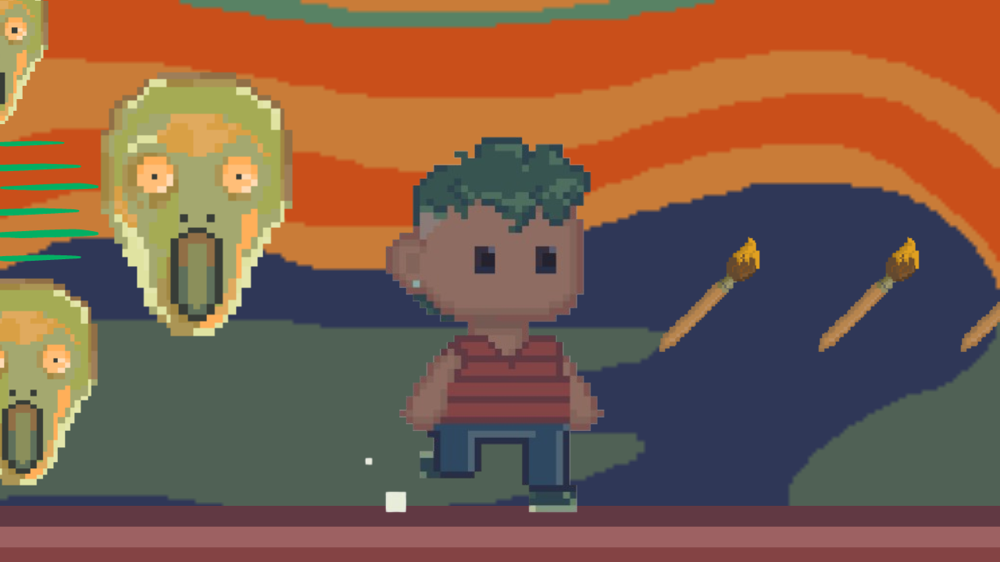

Gustav pode parecer apenas um jogo de artes de coletar pincéis, mas na verdade ele tem uma história por trás, do porquê que ele está naquela situação e como ele
foi parar naquele cenário artístico. Infelizmente, devido a pressa para o desenvolvimento do jogo, não foi possível desenvolver essa história no game. A seguir
você lerá a história completa de Gustav, boa leitura!
Gustav Portinari, um jovem de 17 anos, estava em um museu de Artes com seus pais, que eram apaixonados por pintores e suas obras. Tão apaixonados que, o nome de seu filho,
é inspirado em dois grandes pintores (Gustav Klint e Candido Portinari).
Mas Gustav é completamente o contrário, ele detesta seu nome e detesta arte! O garoto acha pinturas ridículas, segundo ele “não tem nada de mais nessas pinturas, grande b-!”.
Durante o passeio no museu, ele reclamava a todo momento e falava mal das obras para seus pais. De repente, as luzes do local se apagaram, e, quando voltaram, Gustav já não
estava mais em um museu, e sim, em um quartinho vazio, onde as paredes projetavam várias pinturas renascentistas. E então, uma voz desconhecida e fria ecoou no local:
- Você não faz ideia do valor da arte, moleque... – Disse a voz desconhecida.
- Talvez seja porque não tenha! – refutou o garoto.
Impaciente, a voz respondeu – Não gosta de arte? Pois darei motivos pra você não gostar!
No mesmo instante, o chão desaba, e Gustav cai na escuridão. E quando acorda, ele se encontra no que parecia ser a rua, mas o céu do lugar remetia muito a “Noite estrelada” de
Van Gogh (estamos falando da primeira fase do jogo!). E logo o garoto avista uma lua, mas essa lua estranhamente estava muito abaixo e pequena, e parecia querer atingir Gustav...
Gustav terá que passar por três fases, como forma de castigo. Cada fase é inspirado em um artista, e ele deve coletar todos os pincéis presentes nela, para que consiga voltar para
sua realidade.
E essa é a história de “Gustav”! Quem sabe futuramente, seja adaptada para história em quadrinhos?